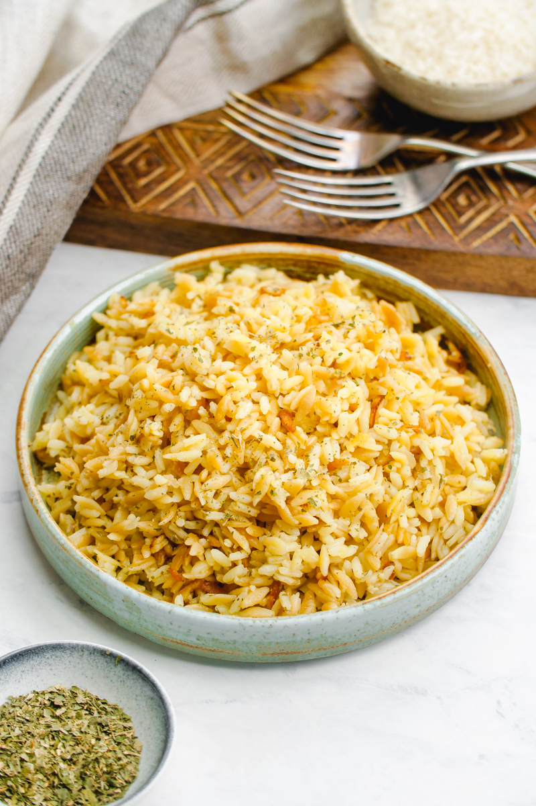

Pilaf

Description
This recipe is a dear recipe to me, it brings many happy memories.
Ingredients
- Rice 300g
- Olive oil
- Broth(veg or non veg)
- Salt
- Pepper
- Spices(optional)
Steps
- In a pan put the rice and gently toast it onn medium heat until it turns golden brown
- Meanwhile in a pot make a broth either with some veggies* or with some meat*
- Add the broth just a an inch above the rice level
- Add the oil, salt, pepper and spices
- Keep adding the broth slowly while it gets absorbed
- Serve on a plate
- Enjoy!